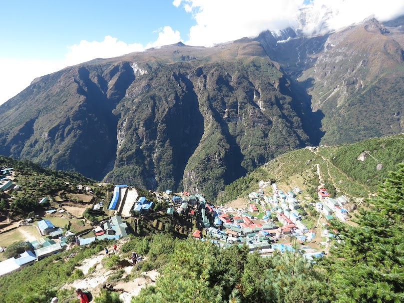
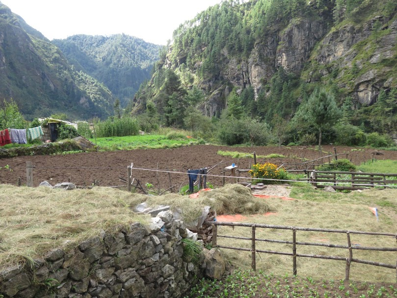
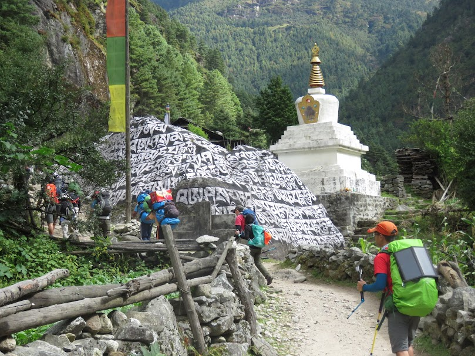
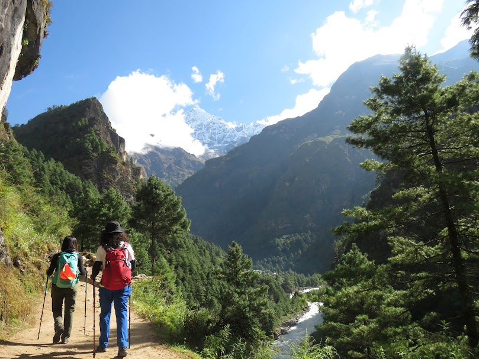

Everest Base Camp Trek by Road
Explore the Everest Base Camp Trek by Road in 2025 with our 15-day itinerary. Experience the adventure of reaching EBC via the scenic drive to Salleri, avoiding flights.





Key Trip Facts
Trek Overview
Trip Highlights
Immerse yourself in exploring the unheard places in the Everest Base Camp Trek by Road.
An alternative route for the Lukla Flight to reach the Everest Base Camp is by road.
Experience the local culture and get scenic views of the lush hills and terrace fields en route to Thamdanda in a private or shared jeep.
Traverse through the Capital Of Sherapa, exploring their local culture and daily lifestyle, Namche Bazaar.
An unobstructed view of Mt. Everest from a viewpoint, Kalapatthar.
Explore different floras and faunas in Sagarmatha National Park.
Panoramic views of mountain peaks like Mt. Everest, Lhotse, Nuptse, Cho Oyu, and Khubmu glacier.
Everest Base Camp Trek by Road Overview
Explore the Everest Base Camp Trek by Road in 2025 with our 15-day itinerary. Experience the adventure of reaching EBC via the scenic drive to Salleri, avoiding flights. Find out the cost and detailed information. Imagine standing at the foot of the world’s tallest peak, surrounded by snow-capped giants and fluttering prayer flags. The Everest Base Camp Trek by Road isn’t just a trek, it’s a life-changing adventure. This journey blends thrill, culture, and nature, making it a must for every adventurer.
Your journey begins in Kathmandu, driving to Thamdanda before trekking through Phakding, Namche Bazaar, Tengboche, Dingboche, and finally reaching Everest Base Camp and Kala Patthar. Each stop reveals new landscapes, from lush valleys to rugged trails, immersing you in the heart of the Khumbu region. As you ascend, Sagarmatha National Park welcomes you with rhododendron forests and rare wildlife like Himalayan Tahr and pheasants. Moreover, the panoramic views of Everest, Lhotse, Nuptse, and Cho Oyu are breathtaking. In addition, the majestic view of mountain peaks, especially at sunrise from Kala Patthar, where golden rays illuminate the Khumbu Glacier, is breathtaking.
This trek is more than just for adventure; it's a cultural experience as well. In Tengboche, witness Mani Rimdu, a festival where monks perform sacred masked dances. Explore Namche Bazaar, the Sherpa hub, where ancient traditions thrive. Also, warm tea houses, Sherpa stories, and vibrant prayer flags make the journey even more special. The Everest Base Camp Trek by Road is the perfect blend of adventure, nature, and culture. From breathtaking views to festivals to experience while trekking in the Everest region, every step leaves a lasting memory. Whether a seasoned trekker or a first-time adventurer, this trek promises an experience of a lifetime.
Why choose Nepali Unique Trek for this trek?
At Nepal Unique Treks, we don’t just take you on a trek; we craft an unforgettable adventure. With over 20 years of experience, we have been guiding trekkers from around the world, ensuring seamless and hassle-free journeys. In addition, as a government-authorized trekking agency, we prioritize safety, comfort, and exceptional service to make your Himalayan experience truly remarkable.
Our team of expert guides is government-certified and has spent over a decade navigating the challenging trails of the Himalayas. Moreover, they have deep knowledge of the terrain, local culture, and high-altitude trekking. Furthermore, they ensure that you are well-informed, safe, and immersed in the journey. Whether it’s tackling steep ascents, acclimatizing at higher altitudes, or understanding the traditions of the region, our guides are there to assist you every step of the way.
We understand that every trekker has a different pace and preference, which is why we offer customized itineraries tailored to your needs. Whether you want extra days for acclimatization, wish to explore hidden gems along the route, or need a trek designed around your schedule, we make it happen. Furthermore, our itineraries are crafted to provide the perfect balance of adventure, safety, and cultural immersion.
When it comes to logistics, we take care of everything, from securing permits to arranging the best available accommodations and meals. In addition, we carefully select tea houses and lodges to ensure your comfort, providing warm hospitality in the heart of the Himalayas. Our strong local connections also add an extra layer of convenience, making your trek smoother and more immersive.
Permits required for the Everest Base Camp Trek by Road
Trekking through the Himalayas isn’t just about breathtaking landscapes and adventure. It also requires the right permits to ensure a smooth and hassle-free journey. Since some sections of the trek pass through protected areas, obtaining the necessary permits is mandatory. Furthermore, these permits not only grant access but also help authorities track trekkers for safety.
For the Everest Base Camp Trek by Road, you’ll need the following permits:
- Sagarmatha National Park Entry Permit
- Khumbu Pasang Lhamu Municipality Entry Permit
- Trekker’s Information Management System (TIMS) Permit
The Sagarmatha National Park is a UNESCO World Heritage Site, home to diverse wildlife and stunning landscapes. To protect this pristine region, the Government of Nepal requires all trekkers to obtain a Sagarmatha National Park Entry Permit before entering. Furthermore, rangers at the entry checkpoints verify the permit, ensuring the conservation of the park while allowing you to explore its beauty.
Similarly, to support local communities and fund developmental projects, the Khumbu Pasang Lhamu Municipality requires trekkers to obtain a separate entry permit. This fee directly contributes to infrastructure improvements, helping sustain the trails and the villages along the trekking route.
Finally issued by Nepal’s tourism authorities, the TIMS Permit is essential for tracking trekkers within remote regions. This permit helps ensure safety by keeping a record of all trekkers entering the Everest region. In case of emergencies, rescue teams can use TIMS data to locate trekkers quickly.
At Nepal Unique Treks, we take care of all the paperwork so you don’t have to. Our team ensures a smooth permit process, allowing you to focus on preparing for the adventure ahead. Let us handle the formalities while you get ready to conquer the Everest Base Camp Trek By Road.
Why is insurance necessary for the Everest Base Camp Trek by Road?
Trekking through the Himalayas is an adventure of a lifetime, but it comes with unpredictable risks. From sudden altitude sickness to unforeseen injuries or extreme weather, challenges can arise at any moment. In such situations, having the right travel insurance can be a lifesaver, ensuring you receive timely medical attention or emergency evacuation when needed.
Before starting your journey, it’s crucial to choose an insurance plan that covers the overall aspects. Policies vary, but the best ones cover medical expenses, high-altitude evacuation, trip cancellations, and lost baggage. Moreover, while traversing through remote areas, where medical facilities are scarce, a reliable insurance plan gives you peace of mind, allowing you to focus on the adventure.
Even though we schedule treks during the best seasons, like spring and autumn, weather conditions in the mountains remain unpredictable. Sudden storms or heavy snowfall can disrupt the route, forcing delays or even cancellations. With proper insurance, you can recover non-refundable costs and avoid unexpected financial burdens.
To summarize, while our expert guides will be there to assist you at every step, insurance provides an extra layer of protection. It ensures that, in case of emergencies, you receive immediate support without worrying about expenses.
Everest Base Camp Trek by Road Itinerary: Day by Day
15 Days program for Everest Base Camp Trek by Road. Daily timings and sequences remain flexible according to weather, flight operations, and group pace.
Day 1: Arrival to Kathmandu International Airport (1400 m)
Approx. 1,400 m / 4,593 ft
Welcome to Nepal, the land of the Himalayas! As you land at Tribhuvan International Airport, representatives from Nepal Unique Treks greet you with bouquets and khadis. After that, we will drive you to the hotel. In the lobby, the hotel staff will serve you a refreshing welcome drink, and then you can check into your room. Take your time to freshen up and rest for a while. After that, we recommend the trekkers go for a short stroll around the nearby areas. Go for a walk around the streets of Thamel, known for its lively markets, cultural shops, and delicious local cuisine. In the evening, we invite you for authentic and local cuisine as a welcome dinner, where you will also meet your guides. Besides, the guides will also provide you with a brief about the Everest Base Camp Trek via road package and the overall journey.
Day 2: Drive from Kathmandu (1400 m) to Salleri 2210 m, by Jeep - 8 to 10 hours
Approx. 2,210 m / 7,251 ft
As this is a by-road trip to the Everest Base Camp, our journey from Kathmandu to the Khumbu region will not be by flight. Therefore, you will have to wake up a little early on the second day. As you wake up and have your breakfast in the hotel, the Nepal Unique Treks and Expeditions' representatives will first take you to the bus station in a private vehicle. From there, we will go for an 8 to 10-hour-long journey through scenic mountain roads, picturesque villages, and lush landscapes. This scenic drive covers a total distance of 260 kilometers, and as we approach Salleri, the road becomes more rugged. For that reason, you might feel tired. Therefore, we recommend the trekkers rest properly after checking in at the hotel. Also, make sure that you prepare yourself both physically and mentally for the journey to the Everest Base Camp that begins the next day.
Day 3: Drive to Surke 64 km, 7 hrs, and Trek to Phakding (2610m) 3/4 hrs
Approx. 2,610 m / 8,563 ft
On the third day, we officially begin our walking journey to the Everest Base Camp. If it had been the Classic Everest Base Camp Package, this day would have been a hike from Lukla to Phakding. Even though the end destination matches here, we begin the trek from Surke. The trail begins as we leave Surke and walk across a path surrounded by dense forests, along with some smaller Sherpa settlements throughout the route. As we keep moving with jeep drive from Salleri to Surke, we will also get our first chance to cross a suspension bridge covered with prayer flags between Surke and Phakding Hike; one of many to be precise! Besides, you will also see some waterfalls on the way, which make the trail cool and more adventurous. Walk a little more, and you will start seeing the snow-capped mountains peeking at you from a significant distance. Remember these mountains because, within a few more days, you will be head-to-head with them. Upon reaching Phakding, you can check in at the hotel, freshen up, have something to eat, and then go for a quick stroll. Make sure that you interact with the locals to understand more about the place, its people, its culture, and its lifestyle. Dinner and overnight stay will be organized by the Nepal Unique Treks team in Phakding at a cozy and hygienic hotel or guesthouse.
Day 4: Trek from Phakding (2610m) to Namche Bazaar (3440m) - 6 to 7 hrs
Approx. 3,440 m / 11,286 ft
Well, this is the turning point of any Everest Base Camp Trekking journey because from Namche Bazaar, the trail starts getting more rugged, the climatic conditions become more brutal, and the chances of altitude sickness also significantly increase. However, the trail from Phakding to Namche Bazaar would be nothing like that. This section of the Everest Base Camp Trek by road starts with a decent walk along the Dudh Koshi River. Just a while later, you will cross one of the most popular suspension bridges of the Khumbu region, the Hilary Bridge. From here, the trail takes us into lush rhododendrons and pine forests while the mountains like Thamserku keep watching us navigate through. Our first checkpoint will be Monjo, where the trekkers need to get their permits checked before entering the Sagarmatha National Park. This is the point where the trail takes a drastic change and becomes a steep climb up to Namche Bazaar. However, this section of the EBC by road trail also offers the first clear view of Mount Everest (8848 meters). Furthermore, you might also see some endangered animals like snow leopards, Himalayan musk, etc while ascending to Namche Bazaar. After a strenuous walk through an ascending steep, you will finally reach Namche Bazaar. Keep your eyes wide open and get your cameras and smartphones ready! That's because the town you will now see is nothing less than heaven in the lap of the Himalayas. Seriously, Namche Bazaar, also known as the trade hub of Nepal, sits at an altitude of 3444 meters, but is so well-developed. Along with that, the unique Sherpa culture, traditional houses, and warm hospitality make Namche even more special for the trekkers ascending higher on the Everest region trail.
Day 5: Acclimatization Day in Namche Bazaar (3440m)
Approx. 3,440 m / 11,286 ft
Today, we will not ascend any further on the regular EBC by road trail. Yes, on the fifth day, we go for a rest. However, that does not mean we will be sitting idle in the hotel throughout the day. Instead, the guides will take some strolls and even a quick hike to the Everest View Hotel (3880 meters). This hotel, known as one of the highest luxury hotels in the world, offers a stunning panoramic view of Mount Everest, Lhotse, Ama Dablam, and Thamserku. It would not take us much to complete this side hike. So, we will utilize the second half of the day to explore Namche Bazaar. You can visit the Sherpa Museum to learn about mountaineering history and local culture. If you have more time and do not want to rest, we recommend the trekkers stroll through the lively market. In the market, you will find many souvenir items and locally prepared food. After that, we request the trekkers to return to the hotel for a delicious dinner and cozy sleep before ascending further on the Everest Base Camp Trek via road trail.
Day 6: Trek from Namche Bazaar (3440m) to Tengboche (3860m) - 5 to 6 hours
Approx. 3,860 m / 12,664 ft
On the sixth day, we will leave Namche Bazaar and ascend on a trail towards Tengboche. After having a delicious and fulfilling breakfast in the hotel, we will have to cover an estimated distance of 9.5 kilometers, which requires us to walk for about 5 to 6 hours. The trail starts with an easy walk offering breathtaking views of Everest (8,848m), Lhotse (8,516m), Nuptse (7,861m), and the iconic Ama Dablam (6,812m). As we keep walking, we will pass and reach a village named Phunki Tenga (3,250m), where we will have to cross a wooden bridge over the Dudh Koshi River. After crossing the bridge, the trail becomes a steep uphill climb through pine and rhododendron forests until we reach Tengboche. This village is home to the legendary Tengboche Monastery, the largest Buddhist monastery in the Khumbu region. Well, you might have understood this, but let us tell you that the village got its name from the monastery. As soon as you enter the territory of Tengboche village, you can notice a different kind of peaceful, calm, and religious vibe flowing throughout. The epic view of Ama Dablam makes it even more magical. In the evening, you can take part in the monastery’s prayer ceremony, an unforgettable experience that adds a cultural and spiritual dimension to your Everest Base Camp by road journey. Afterward, return to the guesthouse for a cozy and comfortable sleep after a fulfilling and hygienic dinner.
Day 7: Trek from Tengboche (3860m) to Dingboche (4410m)
Approx. 4,410 m / 14,469 ft
From this day, the Everest Base Camp Trek by road trail becomes even more rugged, barren, and difficult as we will reach an altitude of 4420 meters above sea level. Due to that, the air also becomes thin, which increases the potential of altitude sickness. Therefore, we recommend that the trekkers have a proper breakfast and keep themselves hydrated throughout the trek. As you finish breakfast in Tengboche, we will follow a trail that descends through lush forests to Deboche (3,820m) before crossing a suspension bridge over the Imja Khola River. From here, the ascent begins as you pass through Pangboche (3,985m), one of the oldest Sherpa villages in the Khumbu region. Here, the trekkers can go for a quick visit to the Pangboche monastery, known for its rich spiritual significance. Slowly and gradually, the land becomes even more lifeless, and we walk through the section with sparse settlement and vegetation. After crossing the last wooden bridge of the day, a steady uphill climb leads you to Dingboche, the gateway to the Imja Valley. This is another spiritually and religiously-signified village surrounded by stone-walled fields. Besides, the Dingboche village also offers outstanding views of different mountains, including Lhotse, Island Peak, and Ama Dablam.
Day 8: Acclimatization Day at Dingboche (4410m)
Approx. 4,410 m / 14,469 ft
To help the body adapt to the temperature and climatic conditions at the higher altitude, we will stay in Dingboche on the eighth day. Wake up, freshen up, and have your breakfast before going for a quick walk around the nearby areas. After that, the guides will take you for a quick hike to Nangkartshang Peak (5,083 meters). This viewpoint stands as one of the perfect viewpoints to get outstanding panoramic views of Makalu (8,485m), Lhotse (8,516m), Ama Dablam (6,812m), and Island Peak (6,189m). The climb certainly will be more strenuous and steep, but it will also be perfect to prepare your body for the thinner air in higher altitudes and push towards higher altitudes with as little discomfort as possible. Other than the Nangkartshang Peak, you can also choose to go for a hike to Chukkung (4730 meters). This is the last settlement before the Island Peak, where you will find a very sparse population, but witness a stunning view of the Imja Valley. Upon returning to Dingboche, we recommend you take some sips of warm tea or coffee and watch the sunset. In the evening, we will arrange a delicious dinner and a comfortable sleep for sure.
Day 9: Trek from Dingboche (4410m) to Lobuche (4910m) - 5 to 6 hours
Approx. 4,910 m / 16,109 ft
Early in the ninth morning, the trekkers will be served an amazing breakfast in the hotel. Take your time to enjoy the breakfast before we take you for another adventurous walk in the EBC by road map. Today, the trial starts with a gradual ascent through a windswept alpine landscape, where vegetation becomes scarce, and the air grows thinner. Moreover, you will also trek along the Khumbu Glacier moraine, passing the small settlement of Thukla (4,620m). Here, we will stop for a break before continuing the walk on the Everest Base Camp Trekking trail. After this, you will have to walk on a challenging ascent that leads to the Thukla Pass (4,830m). Let us tell you that Thukla is home to a memorial site honoring climbers who lost their lives on Everest. This amazing settlement in the lap of the Himalayas also offers stunning views of Pumori (7,161m), Lingtren (6,749m), and Khumbutse (6,636m). The trial from Thukla Pass to Lobuche is comparatively gentle, which makes it easy for us to finish the day's journey. As you enter Lobuche, you will find yourself in a remote village nestled beneath towering peaks. Take your time to stroll around the village before having dinner and going to your room.
Day 10: Trek from Lobuche (4910m) to Gorakshep (5180m) then Everest Base Camp (5364m) - 7 to 8 hours
Approx. 5,180 m / 16,995 ft
Finally, the day has come! It's the most-awaited day of the entire Everest Base Camp Trekking by road as we will reach the Everest Base Camp. After breakfast, the guides lead you on a trail that follows the Khumbu Glacier and passes through a rugged moraine and rocky terrain. It takes about 3 hours for us to reach Gorakshep, the last settlement before Everest Base Camp. Upon reaching Gorakshep, you can store all your belongings (that you don't want to take to the EBC) in the hotel room. Moreover, we also recommend you go for a light meal before ascending on the trail to the base camp. Remember that the path from Gorakshep to EBC is challenging, with loose rocks and glacial debris. However, the excitement of reaching the base of the world's highest mountain keeps you motivated. Upon arriving at the Everest Base Camp, you might feel like your life is now complete. Seriously, the scenes we get make this place the greatest achievement. Take your time to watch the Khumbu Icefall, and other mountains, and play with snow before we make our way back to Gorakshep. As the weather and climatic conditions of EBC are unstable and unpredictable, we will not spend much time here. However, we believe that you have captured as many photos and videos as possible during this short stay. Upon reaching Gorakshep, you can go for a fulfilling dinner and a sound rest. Also, prepare for another high-altitude trek before returning to Kathmandu.
Day 11: Trek from Gorakshep (5140m) to Kalapatthar (5550m) then back to Pheriche (4240m) - 7 to 8 hours
Approx. 4,240 m / 13,911 ft
It's the last high-altitude ascending walk before we make a return to the Everest Base Camp via a road trekking route. We request the trekkers to wake up before dawn because it will be a sunrise-view hike to Kalapatthar. Located at an altitude of 5550 meters above sea level, the Kalapatthar viewpoint offers one of the best sunrise views you will ever get in the world. Other than that, the viewpoint also offers an unparalleled 360-degree panoramic view of Mount Everest (8,848m), Nuptse (7,861m), Pumori (7,161m), and Lhotse (8,516m), glowing in the morning light. Make sure that you take as many photos and videos as possible for long-lasting memories. After that, we will descend back to Gorakshep for breakfast before beginning our long descent to Pheriche (4,240m). The trail retraces your steps through Lobuche and past the Thukla Pass memorial site, before reaching the lower-altitude village of Pheriche, where the air feels richer and warmer. As you reach Pheriche, you can go for a fulfilling dinner and then a sound sleep.
Day 12: Descend from Pheriche (4240m) to Namche Bazaar (3440m) - 6 to 7 hours
Approx. 3,440 m / 11,286 ft
On the twelfth day, we begin the descending journey in the 15-Day Everest Base Camp Trek via road package. After having breakfast in Pheriche, we will go for a long walk, which covers 20 kilometers and requires us to walk for about 6 to 7 hours. As this is a descending journey, the walk will not be as difficult as it was while we ascended. For that reason, you will be able to cover a huge distance within a short time. We will walk on a trail that passes through rhododendron forests and crosses suspension bridges over the Imja Khola and Dudh Koshi Rivers. Also, there is a significant thing that you will notice. It is that, as you lose altitude, the landscape gradually transforms from rocky alpine terrain back to lush greenery. After a while, we will have to go for a short climb before reaching Tengboche, where you can visit the monastery one more time. From here, we will finally reach Namche Bazaar by crossing some other settlements, including Phunki Tenga and Kyangjuma. Upon reaching Namche Bazaar, you will check in at the hotel, have a tasty dinner, and go for a comfortable and cozy sleep in the hotel room.
Day 13: Trek from Namche Bazaar (3440m) to Surke 2210 m, 8/9 hours
Approx. 2,694 m / 8,839 ft
On the thirteenth day, the trekkers will walk for about 5 to 6 hours to descend from Namche Bazaar to Chaurikharka. This section of the Everest Base Camp Trek via road stretches over a distance of 12 kilometers. As we begin the trail, we need to walk a steep downhill path to the Hillary Suspension Bridge before continuing towards Monjo and waving goodbye to the Sagarmatha National Park. Surke is a beautiful small settlement located slightly below Phakding, where you can enjoy the return to lower elevations, where the air feels richer, and the forests are greener. Finally, we will reach Surke, where you can check in at the hotel, have dinner, and sleep for the night.
Day 14: Drive to Salleri 64 km, 2210 m, 7/8 hrsd
Approx. 2,326 m / 7,631 ft
After breakfast in Surke, you will begin a scenic drive to Salleri, the administrative center of the Solu region. The journey covers approximately 64 km and takes around 7–8 hours, depending on road conditions. The route passes through beautiful Sherpa villages, terraced farmlands, dense pine and rhododendron forests, and winding mountain roads with stunning Himalayan scenery. Along the way, you can observe local rural lifestyles, traditional houses, monasteries, and agricultural activities of the Solu Khumbu region. Several small tea shops and villages provide short rest stops during the drive. Upon arrival in Salleri, you can explore the lively local market and the surrounding hills.
Day 15: Drive from Salleri to Kathmandu 260 km, (1400m)
Approx. 1,400 m / 4,593 ft
The drive from Salleri to Kathmandu covers approximately 260 km and takes around 10–12 hours, depending on road and weather conditions. The journey passes through beautiful mid-hill landscapes, traditional villages, terraced farms, rivers, and dense forests. After breakfast, you will begin the scenic drive descending from the Everest region foothills toward the capital city. The road follows sections of the Sunkoshi and BP Highway, offering impressive mountain scenery and local countryside views. Upon arrival in Kathmandu at an elevation of 1,400 meters, you can relax at your hotel or explore the lively streets, markets, temples, and cultural heritage sites of the city.
What is Included (Regular Package)
What is Excluded
Booking Dates & Availability
Packing List for Everest Base Camp Trek by Road
Essential Info: Down jackets and sleeping bags can be rented/arranged per package inclusions.High-Altitude Trail Gear (6 items)
Cold-Weather Layering System (5 items)
Sleep, Health & Permits (3 items)
Read before you book: Everest Base Camp Trek by Road
Practical logistics derived directly from this package's route facts, inclusions, and elevation profile.
Accommodation & Meals (Hotel, Guesthouse)
Accommodation follows the package grade (Hotel, Guesthouse) in Kathmandu and along the Everest route. Check your package Includes section for included meals and Kathmandu hotel nights.
Permits & Local Logistics
Transportation is arranged via Flight and Car/Van. Applicable permits listed in the package inclusions are arranged by Nepal Unique Treks prior to departure.
Route Difficulty & Elevation (5,550 m)
Everest Base Camp Trek by Road is rated Adventurous with a maximum elevation of 5,550 m. Follow your guide's pacing and stay hydrated throughout the 15 Days itinerary.
Best Time to Visit (Spring ( March, April, May), and Autumn ( October, November, December))
Recommended operating season on the source page: Spring ( March, April, May), and Autumn ( October, November, December). Additional official notes from the source page follow below.
Traveller Useful Information
Embarking on the Everest Base Camp Trek By Road is an adventure that requires careful preparation. To ensure a smooth and enjoyable journey, here’s what you need to do before hitting the road to the Himalayas.
Physical Preparation
The trek to Everest Base Camp, even by road, is physically demanding. You’ll be hiking in high altitudes with varying terrain, so it’s essential to start your fitness routine early. Furthermore, focus on cardio exercises, such as running, cycling, or hiking, to build stamina. Moreover, training for your legs and core will help with endurance during steep ascents and descents. Also, include flexibility exercises like yoga to prevent injuries.
Mental Preparation
Trekking to Everest Base Camp can also be a test of mental strength. Prepare yourself to face long, challenging days on the trail. Stay focused and positive, even when the going gets tough. Think of every challenge as an opportunity to push past your limits and achieve something extraordinary.
Hydration and Nutrition
Maintaining proper hydration and nutrition is key to avoiding altitude sickness and staying energized. Drink plenty of water, eat balanced meals, and bring some high-energy snacks like nuts, granola bars, and chocolate to keep you fueled on the trail.
Finally, with the right preparation, your Everest Base Camp Trek By Road will be an experience of a lifetime, combining adventure, culture, and awe-inspiring views.
Take an alternative route to Lukla, reaching Everest Base Camp by road for a unique and immersive adventure. This less-explored path allows you to witness the Himalayas from a whole new perspective.
Enjoy a breathtaking overland journey through lush hills, terraced fields, and charming villages. Whether traveling by private or shared jeep, the ride offers an authentic experience of Nepal’s countryside.
Wander through the lively streets of Namche Bazaar, the cultural hub of the Khumbu region. Explore local markets, visit ancient monasteries, and experience the traditional Sherpa way of life.
Stand at the famous Kala Patthar viewpoint and witness a jaw-dropping panoramic view of Mount Everest. This spot offers the closest and clearest view of the world’s highest peak, especially during sunrise.
Trek through Sagarmatha National Park, a UNESCO-listed site teeming with diverse flora and fauna. Spot rare wildlife like the Himalayan Tahr and colorful pheasants while passing through alpine forests and high-altitude landscapes.
Marvel at the grandeur of the Himalayan range, featuring Everest, Lhotse, Nuptse, and Cho Oyu. The journey also offers mesmerizing views of the Khumbu Glacier, adding to the trek’s breathtaking beauty.
The Everest Base Camp Trek By Road offers a unique blend of adventure and challenge, but it's not an easy feat. The difficulty level can be categorized as moderate to challenging, requiring physical fitness, mental resilience, and preparation for high-altitude conditions. Here’s a breakdown of the factors that contribute to the trek's difficulty:
Physical Demands
While the trek is by road, there will still be several days of hiking through varying terrain. The uphill climbs, rocky paths, and altitude make this trek challenging. Even though you’ll be on a road for part of the journey, the long hours of walking, especially at higher altitudes, can be demanding. Cardiovascular endurance is essential to tackle these strenuous sections and prevent fatigue.
Altitude and Acclimatization
One of the biggest challenges of the trek is the altitude. The Everest region is known for its high elevations, and reaching 5,364 meters (17,598 feet) at Everest Base Camp can lead to altitude sickness if not approached carefully. To minimize risks, it’s essential to allow your body time to acclimatize gradually. The trek’s route includes several acclimatization stops, but altitude-related discomfort like headaches or dizziness can still occur.
Weather Conditions
The weather in the Everest region can change drastically. Winter temperatures can drop below freezing, and sudden storms or rainfall can make the trek more difficult. Spring and Autumn are the preferred seasons for trekking because of the stable weather. However, even during these seasons, unexpected weather fluctuations can add difficulty to the journey. Trekkers should be ready for cold temperatures in the evenings and mornings, especially as they gain altitude.
In summary, the Everest Base Camp Trek By Road is a thrilling yet demanding adventure. With proper preparation, physical fitness, acclimatization, and a strong mindset, you’ll be able to conquer this beautiful, high-altitude trek and enjoy the majestic views and rich culture of the Everest region.
Reaching Everest Base Camp By Road is a multi-step adventure that combines various modes of transportation, each adding to the experience. The journey begins in Kathmandu, where a private vehicle will pick you up from Tribhuvan International Airport (TIA), ensuring a comfortable start to your trek.
Since we will be driving via road and then trek to Lukla, our journey starts from Kathmandu. According to your preferences, we can arrange a private or a shared jeep. The drive to Thamdanda, alternated with a flight to Lukla allows you to explore the lush hills, rivers, small settings, local foods, and many more. It is much safer than flight and more adventurous as well.
After reaching Thamdanda, the real trekking experience begins. The journey takes you through charming Sherpa villages like Phakding, Namche Bazaar, Tengboche, Dingboche, and Gorak Shep, each offering unique landscapes and opportunities for acclimatization. To ease the trek, porters and yaks help carry gear, allowing trekkers to focus on the stunning surroundings without extra burden.
No matter which transportation option you choose, we ensure a seamless and well-organized experience. Our team arranges professional drivers, well-maintained vehicles, and safe flights, so your journey to Everest Base Camp is as smooth and enjoyable as possible.
The Everest Base Camp Trek by Road is possible year-round, but Spring & Autumn offer the best trekking conditions. These seasons bring stable weather, breathtaking views, and a smooth trekking experience, allowing adventurers to enjoy the journey without worrying about extreme conditions.
During Spring (February to May), the trails come alive with blooming rhododendrons, lush green forests, and crystal-clear skies. The moderate temperatures and minimal weather fluctuations make trekking comfortable and enjoyable. Every step offers panoramic mountain views, with the mighty Everest standing tall in the distance. The fresh mountain breeze and colorful surroundings create an unforgettable experience.
Autumn (September to October) is another perfect season for this trek. The post-monsoon freshness brings clear blue skies and crisp mountain air, making for stunning sunrises and sunsets. As the leaves change color, the trails are decorated with golden and orange hues, adding a magical touch to the trek. The weather remains stable, with warm days and cool nights, making high-altitude trekking more manageable.
Although trekking is possible in Summer and Winter, these seasons come with additional challenges. Monsoon (June to August) brings heavy rainfall, slippery trails, and poor visibility, making the journey difficult. Similarly, Winter (November to January), on the other hand, brings extreme cold and heavy snowfall, which can block trails and increase risks. While experienced trekkers might still take on the challenge, most prefer the comfort and beauty of spring and autumn.
Finally, for an unforgettable Himalayan adventure, choosing the right season makes all the difference. Moreover, the Spring and Autumn seasons are best for this Himalayan trek.
After a long day of trekking through rugged landscapes, there’s nothing more rewarding than a warm meal and a cozy place to rest. Food and accommodation play a crucial role in making your journey enjoyable, and we ensure that you experience the best available options along the way. Whether you crave a comforting Nepali dal bhat or a familiar Western dish, you find meals that keep you energized for the challenges ahead.
As you trek through villages and remote settlements, tea houses, and lodges become your go-to stops for meals and rest. In the lower altitudes, we can enjoy a variety of dishes, from local delicacies like momo and Thukpa to Western favorites like pasta and pancakes. However, as the altitude increases, food choices become more limited, focusing on high-energy, nutritious meals designed to keep you strong in the mountains. Moreover, fresh ingredients become scarce at higher elevations, so meals are simple but fulfilling, ensuring you have the strength to push forward.
Accommodation along the route varies depending on the altitude. Similar to the food, in the early stages of the trek, we’ll have access to comfortable lodges with private rooms, Wi-Fi, and hot showers. As we ascend, tea houses become the primary option, offering basic yet welcoming stays with warm blankets and traditional hospitality. These simple lodgings provide an authentic trekking experience, allowing us to rest under the starry Himalayan sky while embracing the tranquility of the mountains.
At Nepal Unique Treks, we prioritize your comfort, ensuring that each night’s stay provides a well-deserved break from the day’s adventure. With warm meals, hearty hospitality, and breathtaking views, your Everest Base Camp Trek By Road promises to be an unforgettable journey.
Imagine standing amidst the towering Himalayan peaks, breathing in the crisp mountain air, and feeling an overwhelming sense of accomplishment. However, as the altitude increases, so does the challenge.
Altitude sickness is an invisible hurdle that can turn an incredible journey into a difficult struggle. Usually, it happens when our body struggles to adapt to lower oxygen levels, leading to symptoms like nausea, dizziness, headaches, and shortness of breath. While this can sound concerning, the good news is that with the right precautions, we can safely conquer the heights and enjoy your trek without worry.
Moreover, altitude sickness can affect even the fittest trekkers. That’s why understanding its early signs and taking immediate action is crucial. A gradual ascent is your best defense, allowing your body time to adapt. In addition, hydration is another remedy to help control altitude sickness. Drink plenty of water and avoid alcohol, as it dehydrates you faster at high elevations. Furthermore, proper nutrition also plays a vital role in keeping your energy levels up and your body strong.
In extreme cases, altitude sickness can escalate into severe conditions like High Altitude Pulmonary Edema (HAPE) or High Altitude Cerebral Edema (HACE), both of which require immediate medical attention. However, with the right precautions, these risks can be minimized. The secret to safe trekking lies in listening to your body, don’t ignore any discomfort.
Moreover, the Nepal Unique Treks itinerary is designed with your safety in mind, incorporating acclimatization days to help your body adjust naturally. Your well-being is our priority, and with the right preparation, you’ll be able to embrace the Himalayas with confidence.
There are multiple things you need to pack before starting this trek. Since the availability of the items in the trek can vary from place to place. And as we ascend the probability of getting those items is much lesser. Therefore, it is recommended to pack these items as per your necessity as well. Below is a list of items for what to wear and need to pack for Everest Base Camp Trek By Road:
Waterproof Trekking Shoes
Thick Warm Woolen Socks
Trekking Trousers
Thermal T-shirt (Long Sleeves)
Down Jacket
Waterproof Jacket
Warm Waterproof Gloves
Headlight for Night or Sunrise Hike
High-Quality Trekking Poles
Day Backpack
Waterproof Bag
Thermal Water Bottle
First Aid Kit
Power Bank
Snacks (Energy Bars and Power Gel)
Trekking Trail Map
Mobile Phone and Power Bank for Mobile Charging
Padlock and Key for Safe Backpack
Sun protection cream, wet wipes, and hand sanitizer
Sleeping bags suitable for cold temperature
Sunglasses, sun hat, or woolen cap
Medicines, Toiletries
Booking the Everest Base Camp Trek By Road is simple and flexible, with multiple options to suit your convenience. You can reach out to us directly via WhatsApp, Zalo, or Viber at +9779851023285. Alternatively, you can send an email to info@nepaluniquetreks.com or nepaluniquetreks@gmail.com. Our team is always ready to assist you with the booking process and customize the itinerary based on your preferences.
To secure your spot, we require a 30% deposit at the time of booking. This ensures your reservation and helps us make all necessary arrangements. Furthermore, you can discuss the available payment methods with our team for a smooth transaction.
Once your booking is confirmed, we will provide detailed information to help you prepare for the trek. This includes essential packing lists, travel tips, and itinerary details. In addition, if you have any questions or need further assistance, feel free to contact us anytime. We’re here to make your journey to Everest Base Camp smooth, exciting, and hassle-free.
Altitude Profile of Everest Base Camp Trek by Road
Weather on Everest Base Camp Trek by Road
Everest Base Camp Trek by Road Route Map
Book This Trek
Contact our Kathmandu coordinators using the booking panel for private or fixed-group departures.
Trip Feedback
Explore verified traveller stories or leave feedback on Nepal Unique Treks.
Visit Nepal Unique Treks